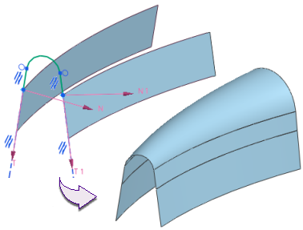

使用约束来控制变化扫掠
变化扫掠的截面可基于路径与草图约束进行更改。如果草图已约束以便曲线与交点重合，则扫掠的边界将与相应的引导线重合。
通过向主截面添加约束或从中移除约束，可以控制变化扫掠。
|
注释 |
尽管简单的变化扫掠可能不需要任何约束，但建议完全约束草图。 |
在本例中，交点创建自第二引导线。该草图已约束，以使线的端点与草图原点处的第一引导线上的点及第二引导线上的交点重合。这些线还被约束为与相切矢量共线。

添加用于约束草图的尺寸还影响产生的扫掠。在下图中，对不同的直线添加尺寸以维持它们在扫掠中的长度。